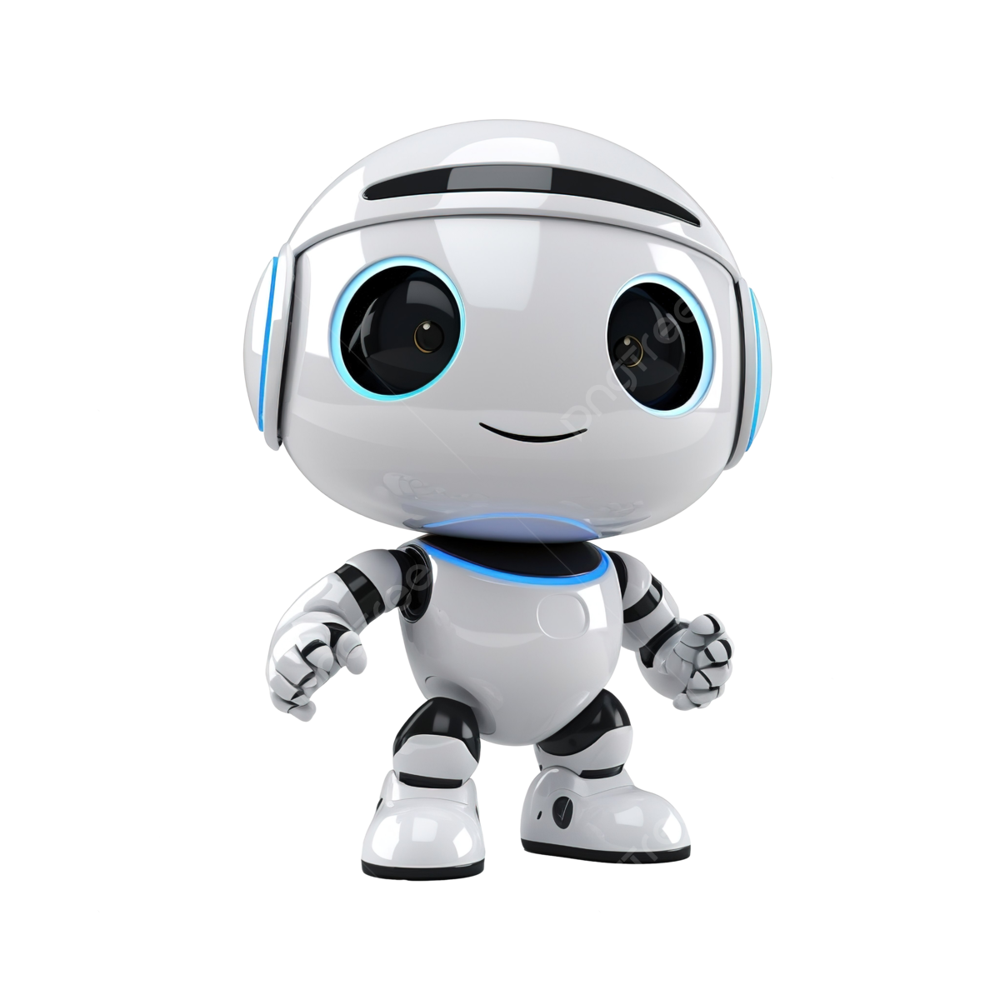
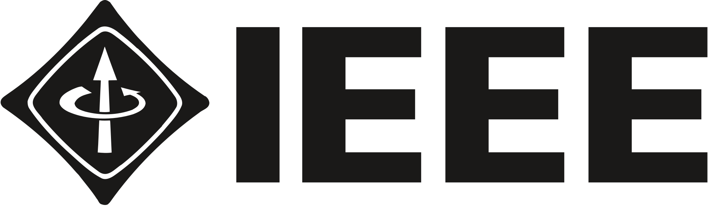
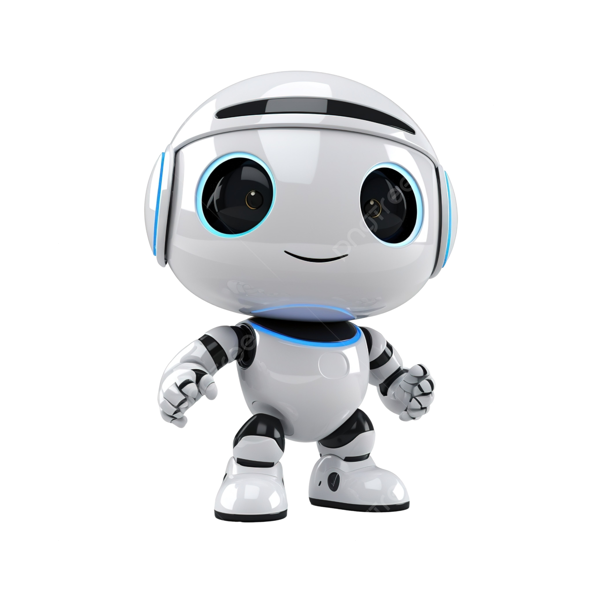
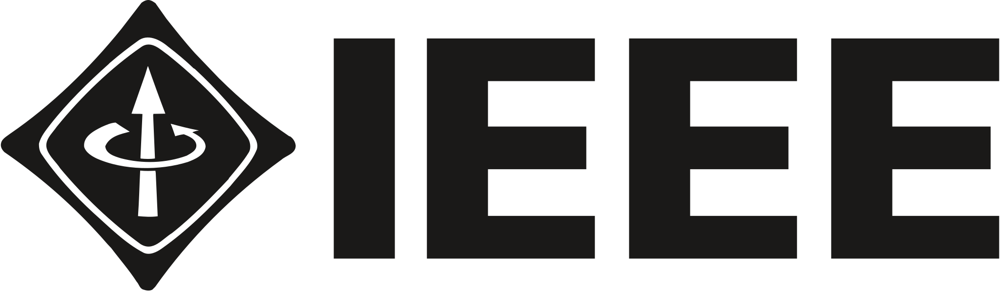
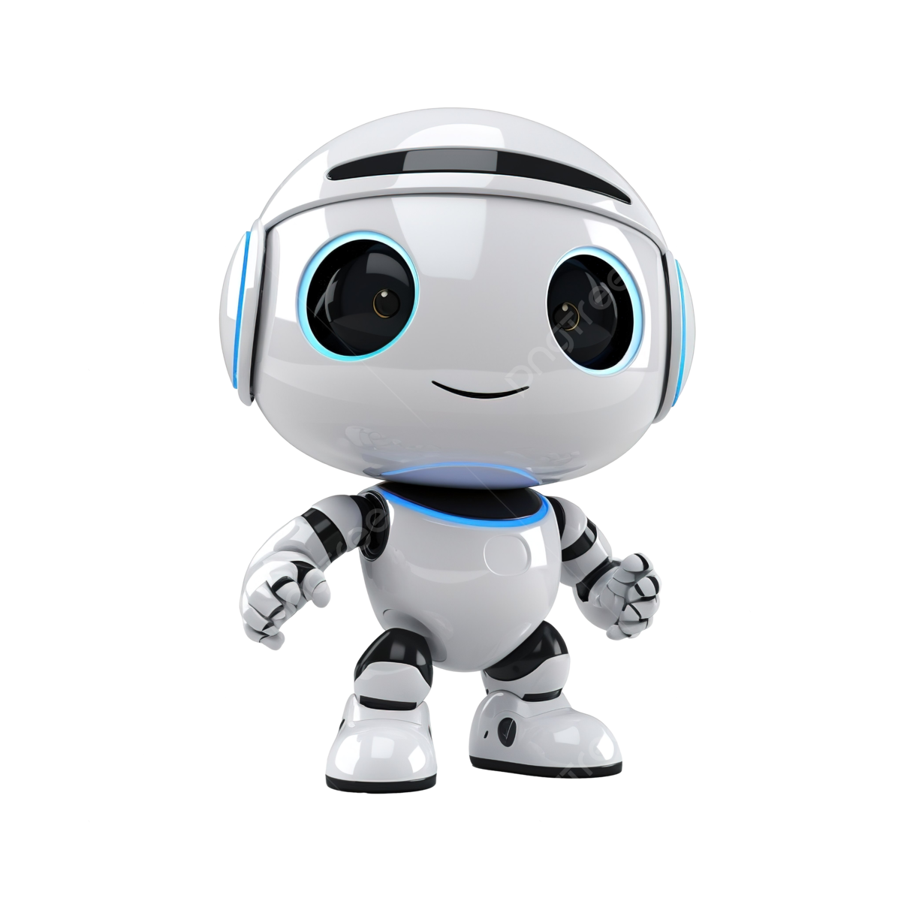
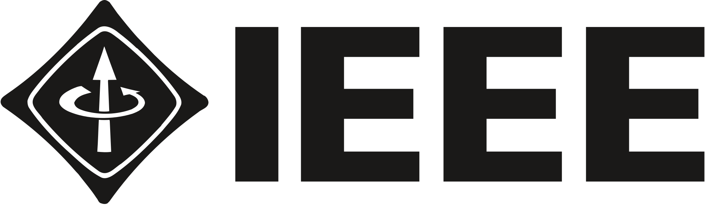
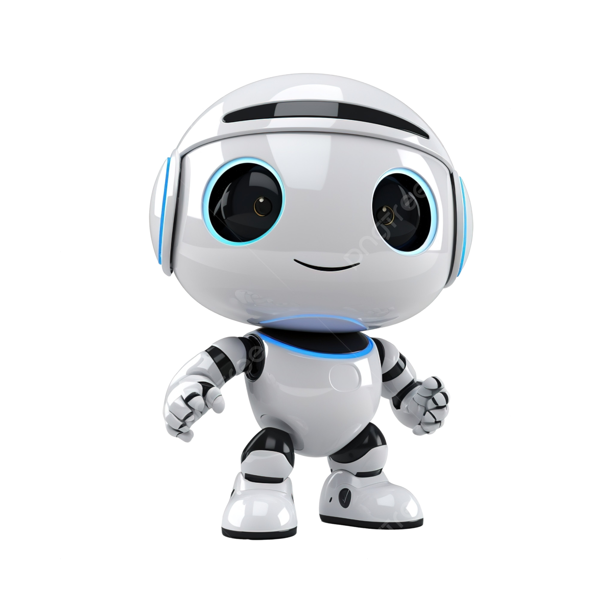
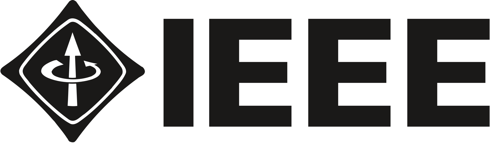

A statement from the President, Past-President and President-Elect of IEEE:"IEEE is, and remains, strongly committed to diversity, equity, and inclusion and we see no place for hatred and discrimination in our communities."

Welcome to the IEEE Robotics and Automation Society (IEEE RAS), a global leader in advancing innovation, education, and research in the fields of robotics and automation. As a society under the IEEE (Institute of Electrical and Electronics Engineers), our mission is to foster technological advancements and support the professional development of individuals working in these dynamic fields.
Becoming a member of IEEE RAS offers numerous benefits:
Whether you are a researcher, practitioner, student, or enthusiast, IEEE RAS provides a platform for you to grow, learn, and contribute to the exciting fields of robotics and automation. Join us in our mission to shape the future of technology and make a lasting impact on the world.
This project involves designing and building a robot capable of navigating autonomously within an environment. The robot uses sensors like LIDAR, ultrasonic sensors, and cameras to map its surroundings and avoid obstacles. It is programmed with path planning algorithms to move from one point to another without human intervention.

A robotic arm project focuses on creating a programmable arm that can perform tasks such as picking and placing objects, assembling components, or even performing intricate operations like soldering. The arm is controlled using servos and motors, and its movements are directed by software, which can be enhanced with machine learning for improved precision and efficiency.

This simple yet popular project involves creating a robot that follows a predetermined path marked by a line on the ground. The robot uses infrared sensors to detect the line and adjusts its direction to stay on track. This project is a great way to learn about basic robotics concepts, sensors, and control systems.
Developing a drone or quadcopter involves creating an aerial robot that can be remotely controlled or fly autonomously. The project covers aerodynamics, control systems, and sensor integration. Drones are used in various applications, including aerial photography, agriculture, delivery services, and environmental monitoring.

Hands-on workshops on various topics such as robot programming, machine learning for robotics, sensor integration, and ROS (Robot Operating System).

Inviting industry experts, professors, and researchers to speak on current trends, challenges, and advancements in robotics and automation.

Organizing competitions such as robot soccer, maze solving, line following, and sumo wrestling robots.

A 24-48 hour event where participants work in teams to develop a robotics project or solution to a given problem.

Hosting panels with experts discussing topics like the future of robotics, ethical considerations, and industry trends.

Workshops and demonstrations in schools and local communities to promote STEM education and interest in robotics.

laraibfiroz@gmail.com

+91 8521514995

Manipal University Jaipur,Jaipur-Ajmer Express Highway, Dehmi Kalan,Near GVK Toll Plaza, Jaipur, Rajasthan 303007